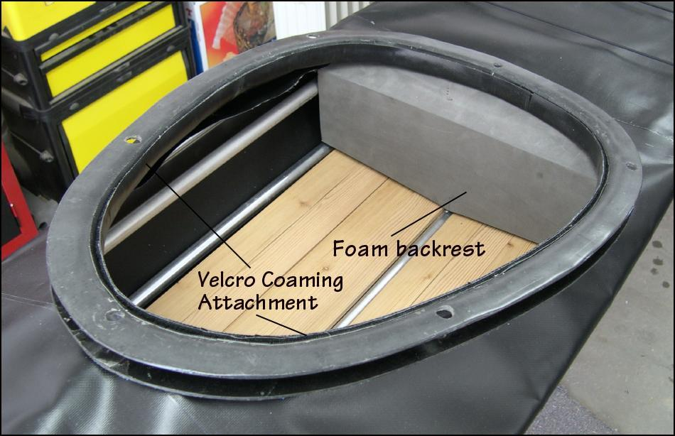

| Fiberglass Coaming (4 of 4) | Menu Previous Page Next Page |
|

Fiberglass Coaming ( No Baseplate) - The fiberglass coaming bolts through the HDPE base plate, deckridge, and cross sections 4 and 5 ( Sea Ranger shown) for a secure attachment. Two 10/24 SS machine screws ( front and back) or clevis pins / split rings are used to attach the coaming at the cross sections. A epoxied Velcro attachment is used at the inside seam of the coaming. Note: The fiberglass coaming is attached without use of a baseplate. The method used is similar to attaching the Wood / Freestanding Coaming. An inside Velcro attachment is more watertight than a foam gasket seal. The Velcro can also attach atop the lip. Use the (BACK) key to return.
|
|